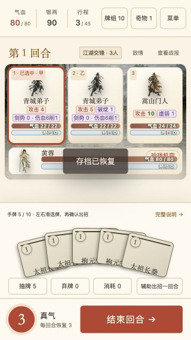
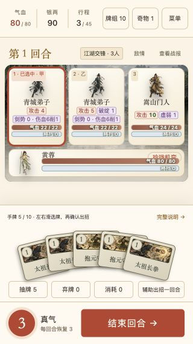
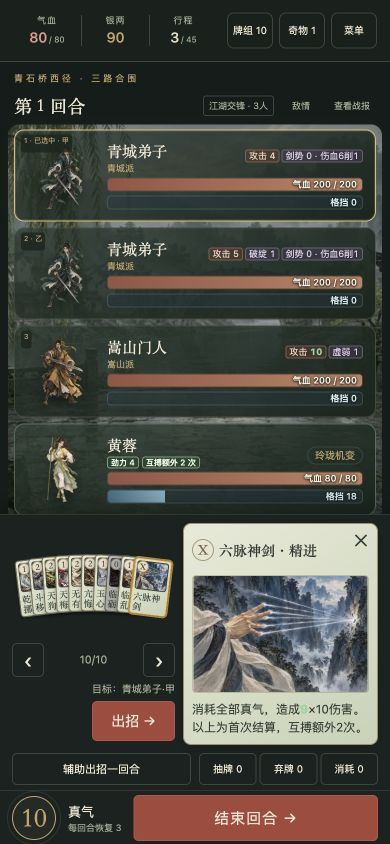
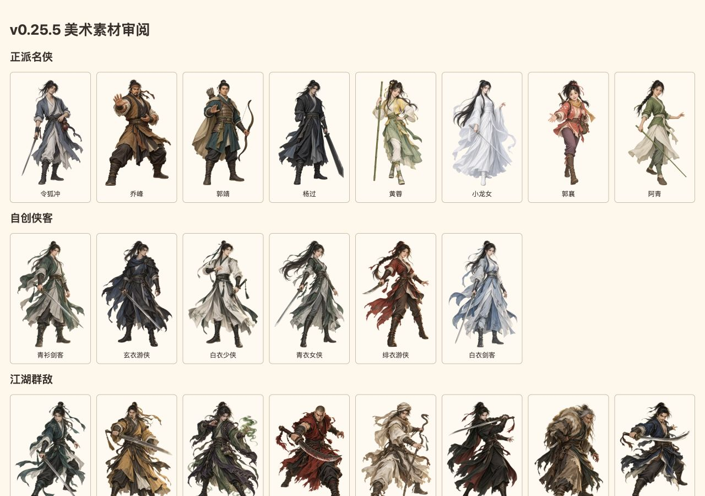
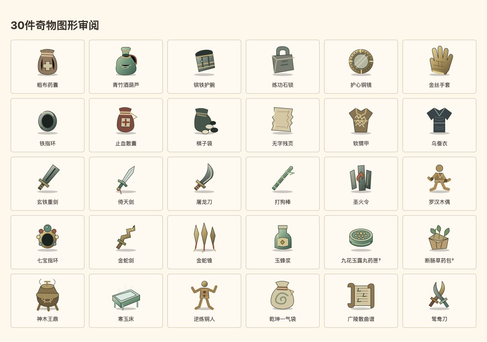

2026-10-20 · 基于v0.25.5复审，修复随v0.25.6发布
一局江湖 · 美术审计
本轮发现2处显示问题，均已修复。人物、卡图和场景无需重画；保留右侧放大牌面、左侧稳定扇面和完整效果说明。
本轮修复
| 问题 | 处理与验证 |
|---|---|
| 短屏手牌缩略图被挤掉 | 去掉旧牌名外边距，压紧牌名区；320×568等短屏的未选牌扇面恢复图像，回归中图片内容高至少24px，未改扇面位置、角度或叠放顺序。 |
| 深色界面的卡面关闭按钮不醒目 | 浅色卡面统一用深色“×”，补齐悬停底色与键盘焦点描边。与卡面渐变两端颜色比较，较低对比值由1.49提升至7.43；三主题及键盘焦点已核对。 |



审阅范围与结果
| 人物 | 8名正派名侠、6个自创立绘、25个敌人；剪影、兵器、配色和姿态可区分。 |
|---|---|
| 插画与图形 | 82张独立武学卡图、16张封面与场景图、30件奇物SVG；137张位图均成功解码。 |
| 界面 | 52组核心视图：320×568、390×844、1280×720，以及横屏与三套配色；覆盖首页、选角、开局、地图、战斗、场景页、结算、精进列表和敌情弹窗。 |
| 回归 | 5组修复专项检查；741项自动测试通过。未发现新的横向溢出或关键说明裁切；原局资源、牌组与进度已还原。 |
长列表中的未入视口卡图沿用按需加载，完整素材页已单独验证解码。手机尺寸为应用内浏览器模拟，未做实体设备验收。极小扇面缩略图用于识别和选牌，完整牌名、插画和效果仍在右侧牌面查看。

